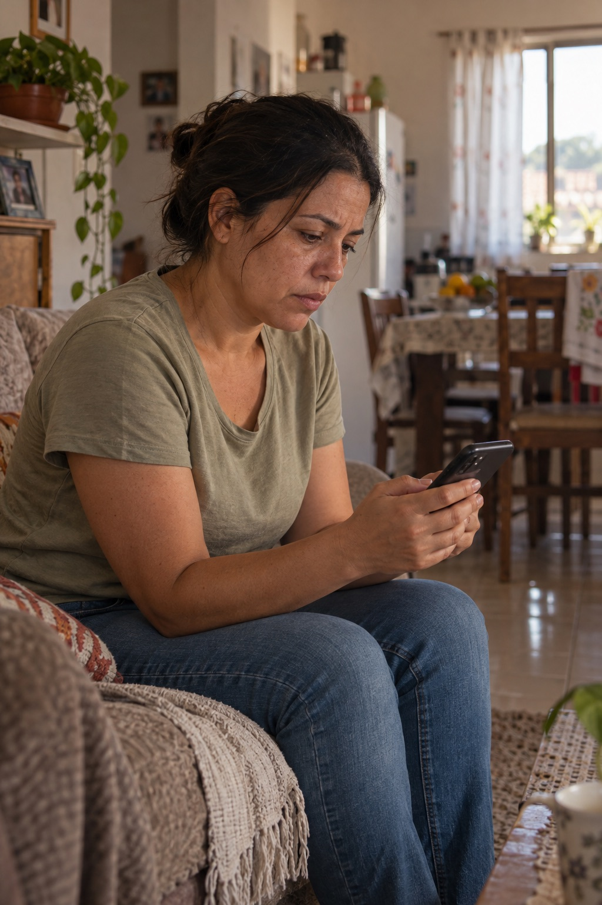

casos de violência doméstica registrados no estado em 2025
TECNOLOGIA A SERVIÇO DA PROTEÇÃO
O socorro
começa com
uma conexão.
Lume conecta mulheres em situação de risco às equipes policiais disponíveis — com geolocalização, acionamento direto e acompanhamento em tempo real.
Atendimento nos municípios com rede policial integrada ao Lume.

PROTEÇÃO QUE
SE MOVE COM VOCÊ
SE MOVE COM VOCÊ
EXEMPLO DE ATENDIMENTO●●●
Localização compartilhadaEquipe disponível notificada
Status e mapa atualizados após o aceite da equipe.
Da mulher à equipe.
Proteção conectada.
- 01Conexão diretaLocalização aproxima os dois lados
- 02Chamado registradoO SOS permanece no sistema
- 03Resposta acompanhadaStatus e mapa após o aceite
SINTA COMO A CONEXÃO ACONTECE
O toque é simples.
O que acontece depois muda tudo.
O SOS segue com a localização às equipes próximas e disponíveis, sem repasse manual por uma central dedicada ao Lume. Veja o fluxo nas duas telas.
LUME / CONEXÃO DIRETADEMONSTRAÇÃO ILUSTRATIVA
LumeQuem pede ajuda
Um toque inicia o pedido.
Lume ForceQuem pode responder
Equipe conectada e disponível.
01 / 04
Tudo começa com um toque.
Acompanhe o SOS no Lume e a resposta pelo Lume Force.
Demonstração conceitual das telas e do fluxo dos aplicativos. Nenhum alerta é enviado ou atendimento acionado.
POR QUE ESSA CONEXÃO IMPORTA
No Rio Grande do Sul,
o tempo faz diferença.
O volume de violência doméstica pede uma rede capaz de responder de forma coordenada, perto de onde a mulher está.
casos registrados em Porto Alegre no mesmo ano
Delegacias Especializadas no Atendimento à Mulher no estado
Salas das Margaridas existentes no estado
Fonte: SSP/RS, 2 jul. 2026. Os números de ocorrências são referentes a 2025; a rede foi descrita pela SSP na mesma publicação. Consulte os indicadores oficiais. Estes dados descrevem a rede pública do RS; não representam cobertura ou resultados do Lume.
DUAS EXPERIÊNCIAS, UMA REDE
Uma interface para pedir.
Outra para agir.
Cada aplicativo tem seu papel. O mesmo chamado conecta as duas experiências.
PARA MULHERES
Um toque para
pedir ajuda.
Prepare endereços e contatos de confiança. Ao pedir ajuda, use a localização atual ou um endereço salvo. Depois do aceite, acompanhe a equipe no mapa.
- Endereços favoritos
- Contatos de confiança
- Status e mapa do chamado
9:41◔ ◉ ▰
A
Olá, Ana.Sua rede de proteção está aqui.
LOCALIZAÇÃOPorto Alegre, RS
⌄✳Você não está sozinhaAjuda conectada, em tempo real.›
⌂Início♡Favoritos◉Perfil
O PEDIDO COMEÇA AQUISua localização.
Junto ao seu SOS.
Junto ao seu SOS.
PARA EQUIPES POLICIAIS
O alerta chega.
A equipe assume.
Uma experiência para o trabalho em campo: disponibilidade da equipe, alertas da região e informações do chamado reunidas na mesma tela.
- Plantão e disponibilidade
- Notificações de novos SOS
- Dados e rota da ocorrência
9:41◔ ◉ ▰
Equipe disponívelEm serviço · Porto Alegre
NOVO CHAMADOAgora
Alerta SOSUma mulher precisa de apoio
na sua região.
Assumir atendimento
⌂Chamados⌖Mapa◉Equipe
A RESPOSTA COMEÇA AQUIContexto para agir.
Localização para chegar.
Localização para chegar.
Lume
Um pedido.
Dois lados conectados.
PROTEÇÃO DO PEDIDO AO ACOMPANHAMENTO
O SOS continua.
Mesmo depois do toque.
O chamado confirmado fica registrado. O Lume Force pode avisar as equipes sem manter a tela aberta, e o status mostra quando o atendimento é assumido.
SOS sem cancelamento
pela vítima.
Depois de confirmado, o chamado não pode ser cancelado no Lume, nem pela própria mulher. Essa regra impede que o pedido seja interrompido pelo aplicativo, inclusive sob pressão.
O alerta vai além
da tela aberta.
As equipes em serviço recebem notificações no Lume Force sem precisar manter o aplicativo aberto na tela. O aviso leva o SOS à equipe disponível para que ela assuma o atendimento.
Chamado registrado.
Status visível.
O SOS confirmado permanece no sistema. Quando uma equipe assume, o Lume atualiza o status e permite acompanhar sua aproximação no mapa.
Registro do SOS→Aviso à equipe→Atendimento assumido→Acompanhamento
Notificação recebida e atendimento assumido são etapas distintas. O recebimento dos avisos depende de conexão, permissões de notificação e funcionamento do aparelho; a resposta depende da disponibilidade da rede policial integrada.
UMA REDE SE CONSTRÓI EM PARCERIA
Tecnologia conectada
à operação da cidade.
O Lume é pensado para implantação com gestores públicos e forças policiais. A implantação define quais áreas e equipes participam, além do protocolo de atendimento do município.
Articular
Alinhar a participação do município, dos gestores e das equipes que vão operar a rede.
Configurar
Definir a área coberta, as unidades conectadas, os perfis policiais e as regras de disponibilidade.
Operar em rede
Preparar as equipes, habilitar as notificações e estabelecer o acompanhamento operacional dos chamados.
PERGUNTAS FREQUENTES
Clareza também
faz parte do cuidado.
Respostas sobre uso, continuidade do SOS e disponibilidade do serviço.
Posso cancelar o SOS depois de confirmar?
Não. Depois da confirmação, a mulher não consegue cancelar o chamado pelo Lume. Mesmo em um acionamento por engano, a situação deve ser esclarecida com a equipe responsável pelo atendimento.
Preciso deixar o Lume Force aberto para receber alertas?
A equipe em serviço pode receber notificações sem manter o app aberto na tela, com conexão e notificações habilitadas. O encerramento forçado do app e restrições do aparelho podem impedir a entrega dos avisos.
Notificação enviada significa que uma equipe já assumiu?
Não. O aviso apresenta o SOS à equipe; o aceite confirma que ela assumiu o atendimento. O Lume atualiza o status após esse aceite. Se não houver confirmação e o risco for imediato, procure atendimento pelo 190.
O aplicativo funciona em qualquer município?
O atendimento depende de implantação local, área coberta e equipes policiais conectadas. Confirme a disponibilidade do Lume no seu município.
O Lume substitui o telefone 190?
Não. O Lume complementa a rede de proteção nos municípios integrados. Em situação de emergência policial, ligue 190.
Em situação de risco imediato: ligue 190 — Polícia Militar. Não espere a confirmação pelo aplicativo para buscar ajuda em uma emergência.